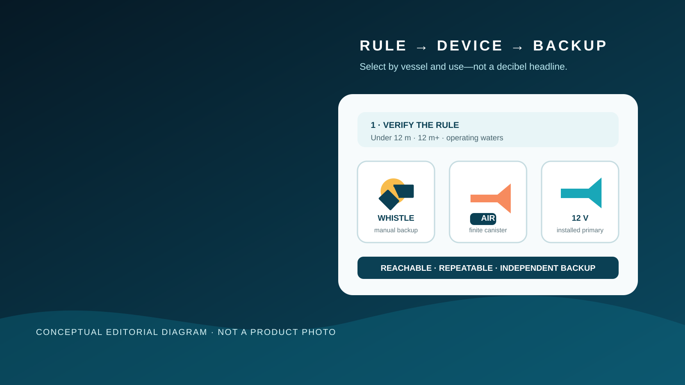

Editorial disclosure: This guide explains a compatibility-first buying process using the current U.S. Coast Guard Navigation Rules. It does not claim hands-on testing, regulatory approval authority or installation expertise. Retail links may be affiliate links that support Nautical Dream without changing the price you pay. Vessel length, operating waters, the exact product specifications, installation instructions and current federal, state and local rules control; use a qualified marine technician when wiring, mounting or compliance is uncertain.
Affiliate disclosure: Nautical Dream may earn a commission from qualifying purchases made through marked retail links, at no additional cost to you. Recommendations remain editorially independent. As an Amazon Associate I earn from qualifying purchases.
A sound device has two jobs that marketplace listings routinely blur: it has to satisfy the rule that applies to the vessel, and it has to work when the operator needs to communicate. A tiny plastic whistle, a disposable canister and a hardwired horn can all be useful. They are not interchangeable simply because each makes noise. The right system begins with length and operating context, then adds reach, audibility, endurance, installation and a backup that does not share the same failure mode.
Choose the system, not the loudest object
The framework below compares whistle, air-horn and installed-horn roles by vessel length, access, power and backup. It is a selection aid, not a product endorsement; verify the current rule and the exact appliance before relying on it.

Start with Rule 33, not a decibel headline
The Coast Guard's current amalgamated Navigation Rules define a whistle as a sound-signaling appliance capable of the prescribed blasts and compliant with Annex III. Rule 33 requires a whistle on vessels 12 meters or longer. At 20 meters or longer, a bell is also required, and larger vessels have additional requirements. A vessel under 12 meters is not obliged to carry the appliances in Rule 33(a), but if it does not, it must have some other means of making an efficient signal.
That last sentence is not permission to carry any object that squeaks. “Efficient” depends on the actual boat and conditions. A device should be operable from the normal control position, audible over the engine and wind, and capable of the duration the rule calls for. State or local equipment requirements may add another layer. Confirm the current Navigation Rules and the rules for the water where the boat operates.
Do not infer compliance from “marine,” a review count or a sound-pressure number measured under undisclosed conditions. For a vessel that must carry a Rule 33 whistle, verify the manufacturer's declaration, technical documentation and installation instructions for the exact delivered device. When the answer is unclear, use a vessel-safety examiner or qualified marine technician before departure.
Know what the blasts mean before testing the horn
Rule 32 defines a short blast as about one second and a prolonged blast as four to six seconds. Rules 34 and 35 assign maneuvering, warning and restricted-visibility meanings, and the Inland and International wording is not identical in every situation. A horn button does not teach those rules.
Keep the current rules available and practice the controls without making signals that could confuse nearby traffic. Never invent a courtesy pattern at the ramp, and do not use a distress signal casually. A continuous sounding with fog-signaling apparatus is listed among the Coast Guard's distress signals; false or ambiguous use can waste attention when someone actually needs help.
Whistle: excellent backup, limited primary
A pealess marine safety whistle has no battery, can be clipped to a life jacket and remains useful after an electrical failure. It is inexpensive, compact and easy to assign to more than one crew member. That makes it a strong backup and a practical personal signaling layer.
The tradeoff is output and endurance. A mouth-blown whistle depends on the user, may be difficult for an injured or panicked person, and can be overwhelmed by engine noise, wind or an enclosed helm. It also does not automatically meet the technical requirements for a vessel that must carry a Rule 33 whistle.
Choose a bright, corrosion-resistant design that can be secured without becoming an entanglement hazard. Test it at a safe distance from ears, rinse it after exposure and keep it out of a sealed locker. A whistle attached to an unworn life jacket under a seat is not a reachable backup.
Handheld air horn: loud without wiring, finite by design
A handheld compressed-gas air horn can provide a strong signal without depending on the boat's electrical system. It fits rental boats, small open boats and emergency bags where a fixed installation is not justified. It can also back up an electric horn if the battery or helm circuit fails.
The canister is a consumable. Pressure changes with use and temperature, valves corrode, caps disappear and a partly used can may not deliver the sequence expected. Storage temperature, transport limits and replacement instructions come from the exact label. Never puncture, refill, heat or test a canister near people. Secure it where it cannot roll, discharge accidentally or sit in extreme heat.
A canister's retail claim is not proof that it is the compliant whistle for a 12-meter vessel. Verify technical documentation and local rules. Date the canister when it goes aboard, inspect for rust or leakage and replace it according to the manufacturer rather than waiting for the emergency test.
Electric horn: repeatable at the helm, dependent on the boat
An installed electric horn places the control at the helm and can produce repeatable blasts without a consumable canister. That is useful when the operator must keep hands and attention on the boat. It can also be mounted so the sound projects clear of canvas and structure.
The weaknesses are the same ones shared by other installed systems: battery state, fuse or breaker, wiring, switch, corrosion, connector quality, physical blockage and water intrusion. Voltage alone does not prove compatibility. Confirm the exact current draw, circuit protection, wire sizing, duty cycle, mounting orientation, drainage, environmental rating and instructions for the boat.
Do not tap an unknown helm circuit or increase a fuse to stop nuisance opening. A qualified marine technician should handle an installation when the circuit, overcurrent protection, routing or structure is uncertain. Keep a manual backup because the horn and navigation lights may share the same battery failure.
Use a five-part compatibility check
| Check | Question | Reject when |
|---|---|---|
| Rule | What does this vessel length and operating area require? | The seller cannot provide the applicable technical claim |
| Access | Can the operator sound it immediately from the control position? | Gear, canvas or a locked compartment blocks use |
| Output | Can it make the prescribed blast over normal boat noise? | The only evidence is an incomparable marketing number |
| Endurance | Can it repeat the necessary sequence? | The battery, canister or user cannot sustain it |
| Backup | What works after the primary failure? | Both devices depend on the same circuit or storage location |
Sound-pressure ratings can be useful only when the measurement distance, weighting, environment and test method are known. One product's large decibel number may not be comparable to another's. Treat frequency, directionality and installation as part of the system, not footnotes.
Fit also includes the people aboard. Do not mount the appliance beside a passenger's head or test it without warning. Crew members with hearing sensitivity need a clear plan that preserves access to the signal without unnecessary exposure.
Install and test without creating a new hazard
Before drilling, identify structure, wiring, fuel systems, controls, visibility lines and water paths. Follow both the horn and boat manufacturer instructions. The opening should not weaken a panel, send water into electronics or aim the sound into enclosed seating. Wiring must be protected, supported and sized for the actual circuit; this is not a place for an unfused temporary lead.
Test at the dock only when the boat is secured, the area is clear and the signal will not confuse traffic or harm hearing. Warn everyone, keep faces away from the outlet and use the shortest test that confirms operation. For a handheld horn, follow the label's test procedure. For an installed horn, confirm the helm switch, output and recovery after repeated brief use without exceeding the duty cycle.
Add the result to the boat log. Record the device, location, installation date, circuit or canister details, backup location and next inspection. A one-time noise is not a maintenance program.
Monthly inspection and the no-buy option
Inspect the primary and backup monthly in season and before any unfamiliar trip. Look for corrosion, loose mounting, blocked outlets, damaged housings, missing caps, weak batteries, aged canisters and chafed wiring. Confirm that packing changes have not buried the manual device. Use the manufacturer procedure; do not spray mystery lubricant into a diaphragm or valve.
The no-buy option is real. If the installed appliance is correctly specified, reachable, working and backed by an independent efficient signal, a new horn may add nothing. Spend the money on fixing access, replacing a questionable connector, labeling the control or practicing the rules.
Replace rather than rationalize when the product has no legible specifications, the canister is damaged, an electric horn sounds weak despite correct supply voltage, or the crew cannot operate it. Diagnose wiring and voltage drop with the documented procedure or a qualified technician. Do not hide a system fault with a larger fuse or a louder unverified appliance.
What not to buy
- A novelty horn selected for tone or volume with no marine installation documentation.
- A tiny whistle treated as automatic compliance for every vessel length.
- A disposable air horn with no readable storage, service or replacement information.
- An electric horn whose current draw exceeds the available protected circuit.
- A dual-horn set mounted where water cannot drain or the sound fires into canvas.
- Two backups stored together or dependent on the same battery.
- A marketplace variant whose photo, rating and delivered model do not match.
The useful purchase is boring: the rule is clear, the documentation is specific, the control is reachable and the backup still works when the primary power does not. Anything else is noise.
The predeparture sound-device audit
Pair this check with the predeparture checklist and VHF distress-call practice. Sound, radio, visual signals and a proper lookout solve different problems. None replaces the others.
Frequently asked questions
Does every recreational boat need a horn?
Every vessel needs the sound-signaling capability required by the applicable rules. Under Rule 33, vessels under 12 meters that do not carry the prescribed whistle still need another means of making an efficient signal; vessels 12 meters and longer must carry a compliant whistle.
Is a mouth whistle enough for a small boat?
It can be an efficient signal and an excellent backup on some boats under 12 meters, but the operator must consider engine noise, wind, access and local rules. It is not an automatic answer for every vessel or operating area.
Is an air horn better than an electric boat horn?
Neither is universally better. A handheld air horn avoids boat wiring but has finite pressure and storage limits. An electric horn is repeatable at the helm but depends on the electrical system and correct installation.
What is a short blast on a boat horn?
Rule 32 defines a short blast as about one second. A prolonged blast lasts four to six seconds. Use the current Navigation Rules for the meaning and sequence required in each situation.
Should a boat carry a backup sound device?
An independent manual backup is prudent because an installed horn can share the same battery or circuit failure as other equipment. The backup must remain reachable and efficient for the boat and conditions.